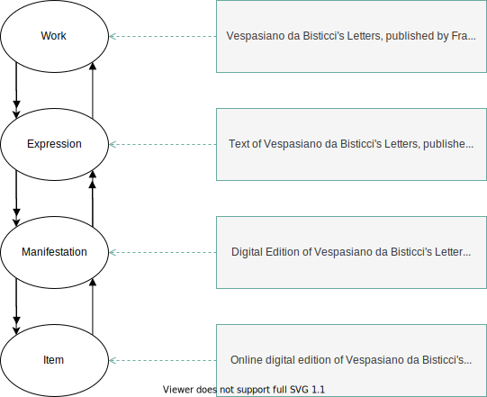

Workflow
The following subsections show the various phases of development of the Knowledge site. First, the XML/TEI P5 markup model is described. Then, the convertion process from the XML/TEI P5 documents into HTML documents is illustrated. Finally, the process of converting certain bits of information contained in the HTML documents into RDF statements is defined.
Markup model
The letters have been marked up in XML/TEI P5 format. The markup elements (people, codices, technical lexicon and citations) represent the access indexes to the letters. The following information has been encoded:
- the diplomatic transcription: all the information regarding the normalization has been solved within the markup, thus respecting the original text;
- the primary source representation (e.g. phenomena such as abbreviations, additions, deletions, corrections, conjectures, gaps, damages, hands, illuminations and rubrications);
- the structure, formulae (e.g. salutatio, datatio, etc.) and content of the letters, including paratextual information (e.g. sender and addressee), technical terms, attested names of entities (e.g. people, places, etc.) and philological notes. In particular:
- the technical lexicon (either created or extracted from some other entities), which is organized in different categories (writing, binding, illumination, format or support);
- the names, which have been normalized according to the Virtual International Authority File (VIAF) and other vocabularies recommendations, in order to ensure interchange between authority descriptions. Attested forms have been used whenever the normalized form could not be found on existing repertoires;
- the citations, which have been listed in order of appearance and with their respective references;
- the description of codices and other supporting resources, accompanied by normalized forms of the author’s name and the title, as well as the shelfmark, the codicological description, the digital images and the people who possessed them;
- the edition metadata, such as the identifier, paratextual information, repository information, interpretative information and commentaries about people, places, codices, events and technical lexicon.
HTML conversion
A series of HTML documents have been created starting from the letters that have been marked up in XML/TEI P5. The HTML documents follow responsive design principles that ensure their readability on multiple platforms and supports.
Each HTML document represents a single letter and consists in a div element, identified by an @id attribute with form “letter-[number]”, which contains:
- a series of metadata related to information about sending, provenance, edition and visualization of the letter;
- the actual letter, treated as an
articleelement with a@classattribute “Letter” and identified by an@idattribute with form “tomasi-letter-[number]”. The letter contains a number ofsectionelements, each representing a section of the letter. Each section is specified by the@classattribute (e.g. “Salutatio”, “MainText”, “Datatio”) and is identified by the@idattribute with form “tomasi-letter-[number]-[class]”. The proper text in each section is delimited in a series of paragraphs, each highlighted by thepelement, which in turn contains a varying number ofspanelements. Eachspanelement is used to enclose and characterize the most relevant elements found in the text (e.g. names, references to codices, technical terms, etc.). Aspanelement is characterized by a@classattribute that determines its nature and a@hrefattribute that links it to the respective entity it represents. Aspanelement may also have a@titleattribute that allows to differentiate between different related instances with the same@classattribute. For example, both the sender and the adressee of a letter have “Role” as its class, but the title of the former is “Sender”, while the title of the latter is “Addressee”; - a series of footnotes, each treated as a stand-alone
sectionelement with a@classattribute “Footnote” and a@hrefattribute linking it to the note. As seen previously, the proper text in each section is delimited in a series of paragraphs, each highlighted by thepelement, which in turn contain a varying number ofspanelements. References to other letters have been expressed through theaelement, by setting the link destination (the other letter) in the@hrefattribute.
RDF conversion
The Resource Description Framework (RDF) is a data model according to which data is organized in a graph structure. This graph is based on a series of statements about the domain of knowledge. Each statement is structured in a triple, in the form of “subject-predicate-object”. In the graph, “subject” and “object” are nodes connected with each other by a directed arc labelled as “predicate”. The subject denotes a resource, the object denotes another resource or an attribute of the subject, and the predicate expresses a semantic relationship between the two. Subject, predicate and object are each identified by their corresponding Uniform Resource Identifier (URI), a mechanism that allows resources to be identified unambiguously in a persistent way.
After being harmonized so as to be cohesive, the HTML documents have been converted into RDF/XML documents. RDF/XML is an RDF serialization that expresses a RDF graph as a XML document.
Most of the values held by the @class attributes contained in span elements have been converted into ontological classes aligned with existing ontologies (e.g. the concept of “Person” has been aligned with the class foaf:Person, and so on). This has been done by using eXtensible Stylesheet Language Transformations (XSLT), a declarative programming language for converting a document in a XML-based format into another document in a different XML-based format. In order to generate a XSLT transformation two files are needed: the document to convert and a XSLT stylesheet that provides the semantics needed for the transformation. The XSLT stylesheet treats the document to convert as a set of nodes organized in a tree structure, and is made up by a series of templates containing the transformation rules to convert said tree structure into another tree structure.
The output RDF/XML data has been collected into a single RDF dataset. The HTML files are still used for visualizing the single letters, while the RDF graph is used to explore the data related to them (e.g. indices, paratextual information, etc.).
Reused models
A series of existing ontologies have been reused for describing the manuscript letters and the entities that contain their contextual information. In particular:
- the Biographical information vocabulary (BIO) is a vocabulary for describing biographical information about people;
- the Citation Counting and Context Characterization Ontology (C4O) is an ontology that allows the characterization of bibliographic citations in terms of their number and content;
- the Citation Typing Ontology (CiTO) is an ontology that enables characterization of the nature or type of citations, both factually and rhetorically;
- the Discourse Elements Ontology (DEO) is an ontology for describing the rhetorical elements of a document;
- the Document Components Ontology (DoCO) is an ontology for describing the component parts of a bibliographic document;
- the Dublin Core Metadata Terms (DCTerms) is an ontology implementing all the metadata terms maintained by the Dublin Core Metadata Initiative;
- the FRBR-align Bibliographic Ontology (FaBiO) is an ontology for recording and publishing on the Semantic Web bibliographic records of scholarly endeavors;
- the Friend Of A Friend vocabulary (FOAF) is an ontology for describing people and their relations with other people, documents, and other information objects;
- the Expression of Core FRBR Concepts in RDF (FRBRcore) is an RDF vocabulary incorporating the basic concepts and relations described in the IFLA report on the Functional Requirements for Bibliographic Records (FRBR);
- the Historical Context Ontology (HiCO) is an ontology for representing the features that characterize an interpretation act;
- the Pattern Ontology (PO) is an ontology defining formally patterns for segmenting a document into atomic components;
- the Publishing Requirements for Industry Standard Metadata vocabulary (PRISM) defines an XML/RDF metadata vocabulary for managing, aggregating, post-processing, multi-purposing and aggregating bibliographic content;
- the Publishing Roles Ontology (PRO) is an ontology describing possible roles in the publication process, or in other scholarly activities or situations, held by particular agents in certain periods of time;
- the W3C PROVenance Interchange ontology (PROV) is an ontology for supporting the interchange of provenance on the web;
- the SAN Ontology (SAN) is an ontology for describing digital cultural archives;
- the schema.org vocabulary (schema) vocabulary is a general vocabulary for expressing structured data on the Web;
- the Time Interval pattern (TI) is an ontology design pattern that enables the description of periods of time;
- the Time-indexed Value in Context pattern (TVC) is an ontology design pattern that allows to describe scenarios in which someone (e.g., a person) has a value (e.g. a particular role) during a particular time and for a particular context.
Most of these models are part of the Semantic Publishing and Referencing ontologies (SPAR), a suite of orthogonal, non-overlapping and complementary OWL 2 DL ontology modules for the creation of comprehensive machine-readable RDF metadata covering every aspect of semantic publishing and referencing. The SPAR Ontologies follows the FAIR principles for data publication and reuse existing standards developed for describing bibliographic resources, such as FRBR.
The Functional Requirements for Bibliographic Records standard (FRBR), a well-known and robust model proposed by the International Federation of Library Association (IFLA) for representing bibliographic resources and metadata, is a highly adaptable model that is not bound to a specific implementation and can be applied to both physical and digital resources. It describes each resource from four different conceptual points of view that are interlinked with each other and are defined by the following categories:
- Work. It is the high-level description of the essence of a particular resource, which does not depend on any concrete representation. It is realized through one or more Expressions;
- Expression. It is the form taken by a Work when it is realized in terms of content. It is the realization of one and only one Work and is embodied in one or more Manifestations;
- Manifestation. It is a particular embodiment in the physical world of an Expression, according to a specific format. It embodies one or more Expressions and is exemplified by one or more Items;
- Item. It is the single, tangible and located exemplar of a certain Manifestation. It exemplifies one and only one Manifestation.
These concepts are organized in a structure in which each entity is in a specific relationship with one other entity, forming a continuous flow from Work to Item and vice versa. This framework allows a holistic perspective about the resource, on multiple levels of conceptualization, by breaking down the semantic and conceptual ambiguities related to objects created by human hands into different but related and layered concepts and by allowing the description of an artifact and its relations with other entities to be more expressive, precise and dynamic.
An example of how FRBR has been used in the RDF graph of the Knowledge site is illustrated in the figure below.
The notion of the digital edition of Vespasiano da Bisticci’s Letters published by Francesca Tomasi has been broken down into multiple concepts distributed across the four FRBR levels of conceptualization. At the Work level, there is the abstract of the edition. At the Expression level, there is the content of the edition. At the Manifestation level, there is the edition in its specified form. At the Item level, there is the proper and specific digital edition existing on the Web.